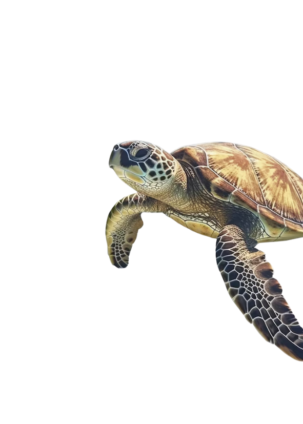
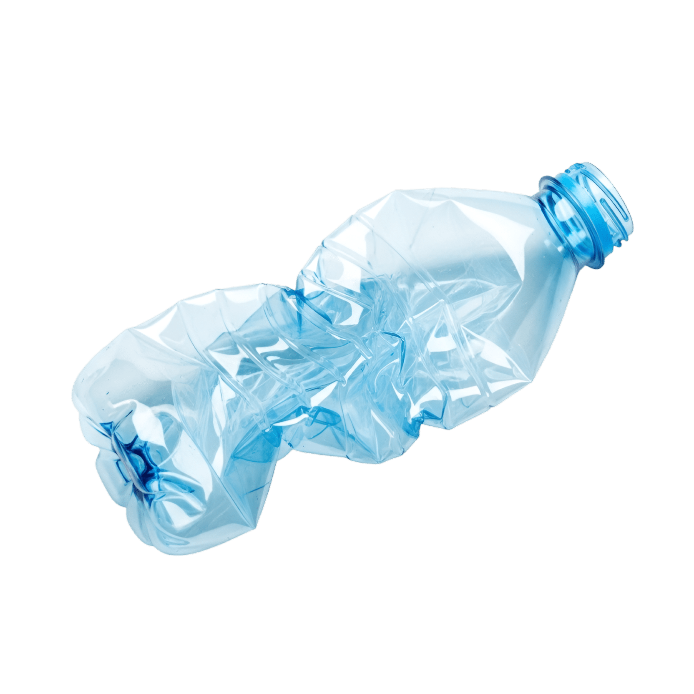
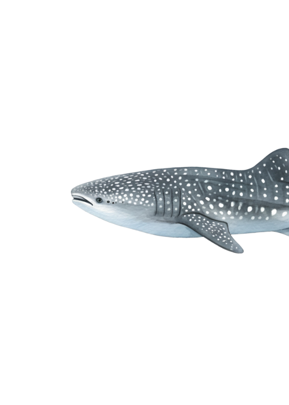
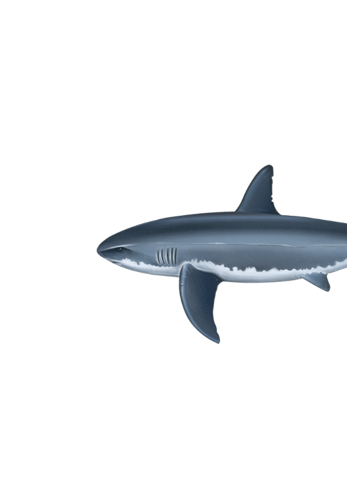
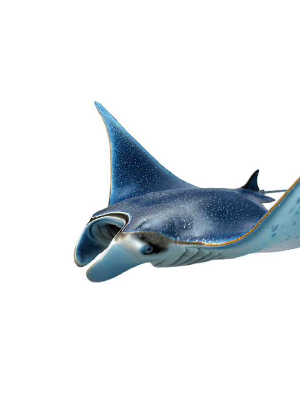

The largest fish in the sea
Whale shark
A gentle plankton feeder with a spotted back, and a favorite for divers.
Where: Donsol Bay, Oslob, Tubbataha
AquaSave puts Philippine cleanup crews, reef teams and rescue responders on one dashboard, so every ton pulled out and every animal saved gets counted.

Coastal communities, researchers and field teams report to the same ledger, so progress is something you can measure.
Crews log each haul from the field, and it shows up in the yearly total within the hour.
Coral sites get protected space and regular surveys until they can grow back on their own.
Rapid response teams reach turtles, sharks and dugongs before a tangle becomes a loss.

The country sits at the center of the Coral Triangle, and plastic is reaching it. The UN reports 6 activities supporting SDG 14 here, out of 220 across all goals (UN INFO).
of the world's known shorefish species live in the Verde Island Passage in Batangas.
Source: Global Affairs Canada, Pure Oceans storymore likely to develop disease: corals that sit in contact with plastic.
Source: Global Affairs Canada, Pure Oceans storysachets from major brands are left in the Philippine environment every day.
Source: Greenpeace Philippinesof plastic waste a year by a World Bank estimate, with about 20% ending up in the ocean.
Source: Daily Guardian, citing the World BankFilter by year, focus area and status. Hover a dot for site analytics, or switch to clusters to see island groups.
The Philippines sits in the Coral Triangle, which holds 76% of the world's coral species. Tap an animal to watch it and see where to find it.
A gentle plankton feeder with a spotted back, and a favorite for divers.
Where: Donsol Bay, Oslob, Tubbataha
A shy deep-water shark that stuns its prey with a long, whip-like tail.
Where: Malapascua IslandTwo turtle species share Philippine reefs, and both are threatened by plastic.
Where: Tubbataha Reef, Verde Island Passage
A graceful filter feeder that glides through the water with its large, wing-like pectoral fins.
Where: Bohol Sea, Siquijor